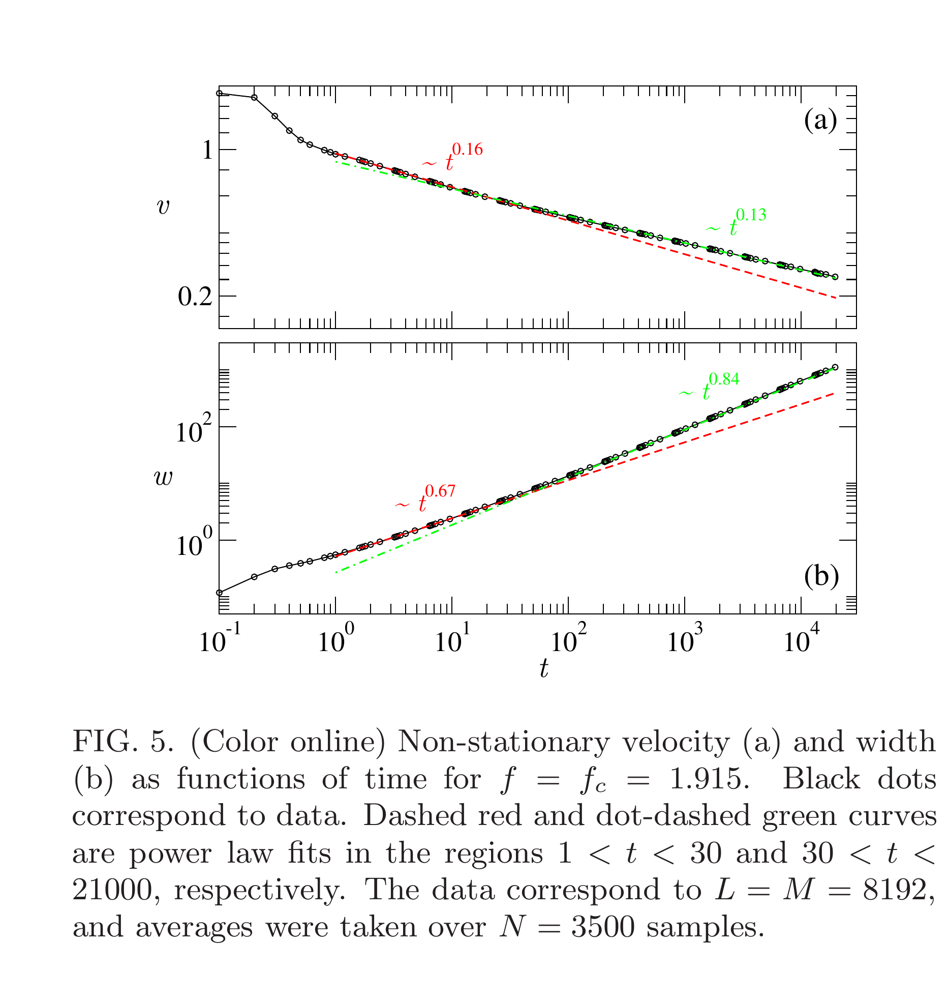
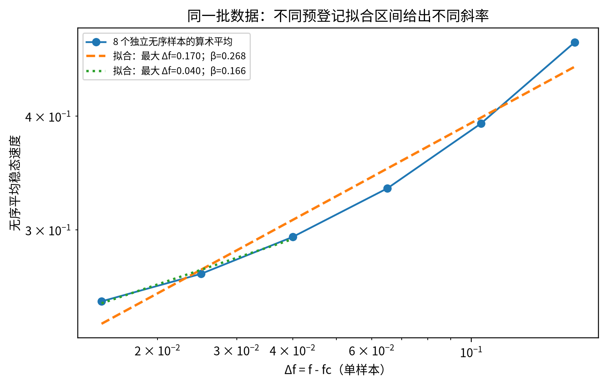
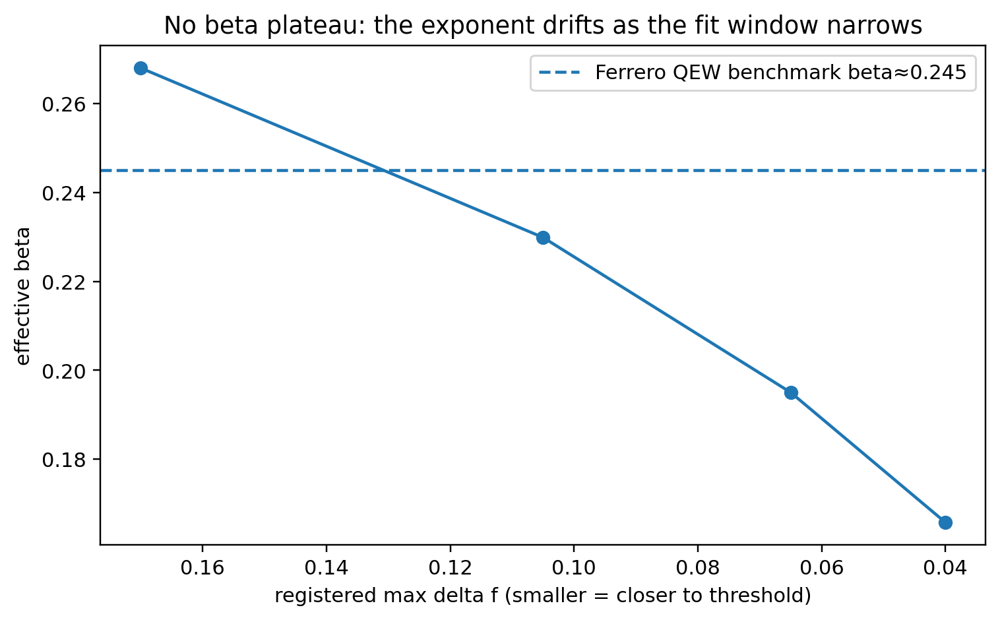
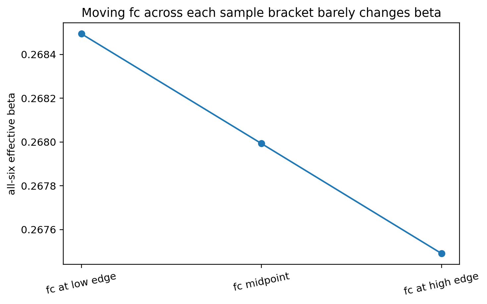
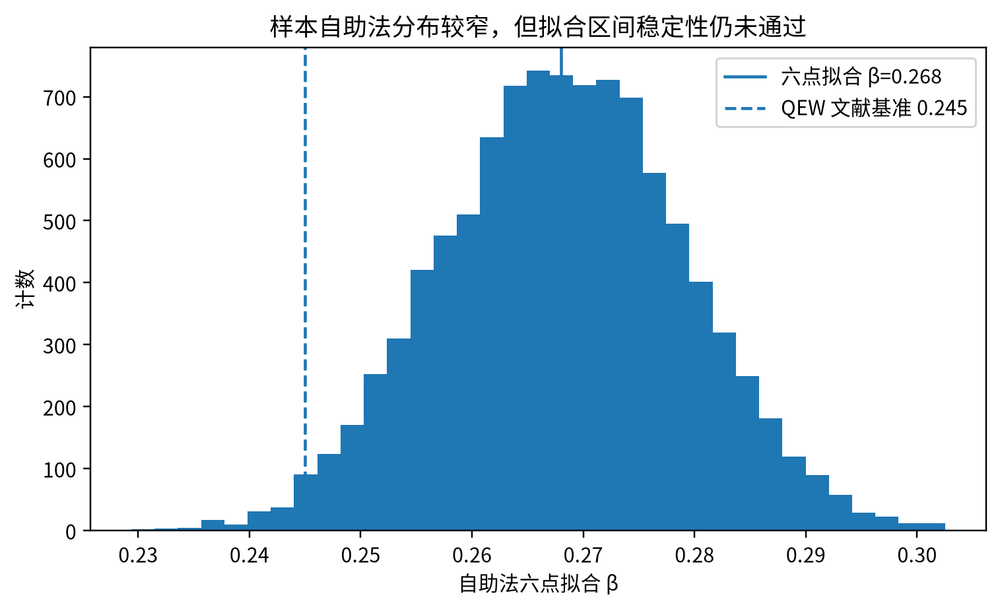

Learning Sliding Ferroelectricity / 复现实验室 / 第 09 课
β 拟合区间审计8 个独立无序样本禁止事后挑点
一条漂亮的双对数直线，不等于普适 β
Ferrero 的关键提醒不是“正确答案等于 0.245”，而是 mesoscopic corrections（介观修正）会制造有偏的 effective exponent（有效指数）。因此 L09 只问：按照预先登记的规则逐步缩小 Δf 拟合区间时，β 是否形成稳定平台。
1 · 论文 Fig.5同一次临界弛豫在不同尺度上出现不同有效斜率。
2 · 我们的 v(Δf)对 8 个独立无序样本取算术平均。
3 · β 随拟合区间变化这是决定是否授权 β 的核心判据。
4 · 排除替代解释阈值区间与 bootstrap（自助法）都不能消除拟合区间漂移。
0 · 论文原图：corrections-to-scaling（标度修正）是看得见的

我们不是拿 Fig.5 的时间斜率直接比较 β。 它提供的是方法论证据：临界附近存在 crossover（交叉）与标度修正，因此稳态 v(f) 的 β 也必须检查拟合区间稳定性，不能只挑一个最接近文献基准值的区间。
1 · 我们真正拟合的数据

2 · 核心结果：β 没有形成稳定平台

| max Δf | βeff |
|---|---|
| 0.170 | 0.267993 |
| 0.105 | 0.229890 |
| 0.065 | 0.195041 |
| 0.040 | 0.165810 |
拟合区间稳定性：未通过。 β 漂移为 0.102183，远高于预先登记的 0.030 判据。
3 · 是不是 L07 的 fc 不够准？不是主要问题

4 · bootstrap（自助法）置信区间为什么也不能救？

5 · 本课结论
回归分析已知答案测试：通过。 同一套双对数拟合流程在 tilted washboard（倾斜搓衣板势）模型中正确恢复 β=1/2。
普适 β 结论：不授权。 当前 L=32、u 方向周期边界的几何设置只给出随拟合区间变化的有效 β。